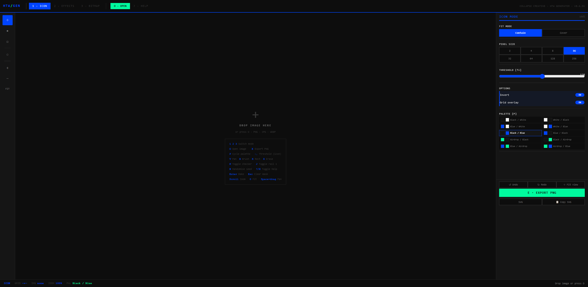

CC DEV. UNIT / SISTEMAS DIGITALES
Sistemas digitales para operaciones reales.
Diseñamos software, herramientas internas, interfaces y workflows a medida.
Partimos del funcionamiento de cada proyecto para definir qué necesita estructura y qué conviene construir. La automatización y la inteligencia artificial se incorporan cuando aportan utilidad y capacidad de control.
CUÁNDO ENTRA CCDV
Cuando la operación pierde claridad.
Las herramientas digitales suelen crecer por acumulación. CC Dev. Unit trabaja cuando esa estructura dificulta consultar información, seguir el trabajo o evolucionar una herramienta.
- 01
INFORMACIÓN REPARTIDA
Los datos y documentos están distribuidos entre distintas herramientas.
- 02
SEGUIMIENTO LIMITADO
Falta una visión clara del estado de proyectos, solicitudes o tareas.
- 03
TRABAJO MANUAL RECURRENTE
El equipo repite transferencias, registros o comprobaciones.
- 04
HERRAMIENTAS QUE NECESITAN EVOLUCIONAR
El sistema actual ya no responde al volumen o a la forma de uso.
- 05
SOLUCIÓN POR DEFINIR
Existe una necesidad, pero todavía faltan alcance, usuarios y requisitos.
PRACTICE
La capa operativa y digital del proyecto.
Trabajamos sobre procesos, información, interfaces y tecnología. Las áreas se combinan según el contexto de cada proyecto.
Áreas de práctica
Formas posibles
- 01OPERACIONES Y WORKFLOWS
- 02DATOS E INFORMACIÓN
- 03INTERFACES Y PRODUCTO
- 04SOFTWARE Y HERRAMIENTAS
- 05IA APLICADA
- 01DIAGNÓSTICO Y ARQUITECTURA
- 02HERRAMIENTA INTERNA
- 03DASHBOARD O SISTEMA DE CONSULTA
- 04PLATAFORMA O WEB APP
- 05PROTOTIPO O PRODUCTO DIGITAL
La forma final se define después de entender el funcionamiento, los usuarios y la información que interviene.
METHOD
Entender antes de construir.
Cada proyecto comienza con una lectura del funcionamiento actual. A partir de ahí se define el alcance y la forma adecuada de la solución.
- 01
DIAGNÓSTICO
Leemos procesos, herramientas, personas e información.
- 02
DEFINICIÓN
Delimitamos usuarios, prioridades, requisitos y alcance.
- 03
DISEÑO
Ordenamos arquitectura, recorridos e interfaz.
- 04
CONSTRUCCIÓN
Desarrollamos y probamos el sistema por partes verificables.
- 05
DOCUMENTACIÓN
Dejamos una base comprensible y preparada para evolucionar.
CASO APLICADO / HERRAMIENTA INTERNA
HTW-GEN
Un sistema visual convertido en herramienta de producción.
CC Dev. Unit tradujo las reglas visuales de Hacking The World a una herramienta configurable para procesar imágenes y símbolos.
HTW-GEN concentra operaciones recurrentes y genera activos coherentes para web, presentaciones, redes y otros formatos.

LABS / INVESTIGACIÓN APLICADA
Herramientas que nacen del uso.
Labs reúne herramientas internas y prototipos desarrollados para trabajar sobre necesidades propias. El aprendizaje obtenido vuelve a la práctica de CC Dev. Unit y mejora las decisiones de proyectos posteriores.
COLLAPSE CREATIVE / CC DEV. UNIT
Dos campos de trabajo que pueden coordinarse.
Cada operación desarrolla proyectos de forma independiente. Cuando un encargo cruza ambos campos, el alcance se organiza con responsabilidades diferenciadas.
COLLAPSE CREATIVE
Sistemas de marca, comunicación, contenido y experiencia.
CONOCER COLLAPSE CREATIVE ↗INFO + CONTACT
Empezar por el contexto.
Cuéntanos qué existe ahora, qué necesita cambiar y quién utiliza el sistema.
La primera conversación sirve para delimitar el proyecto y establecer el siguiente paso.